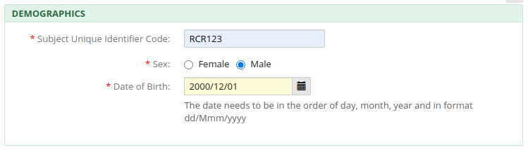
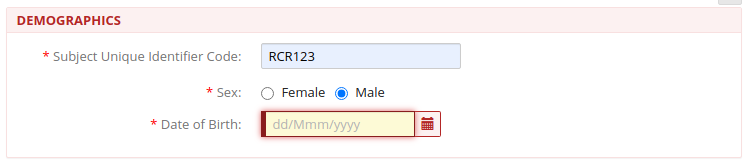
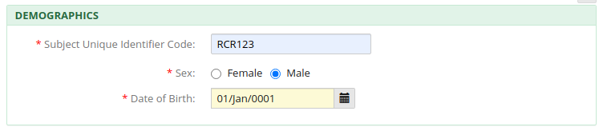
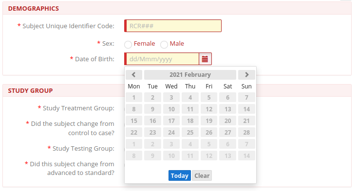
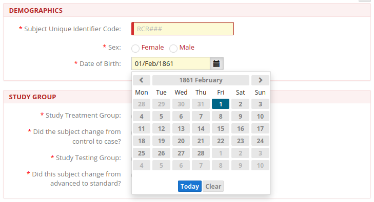
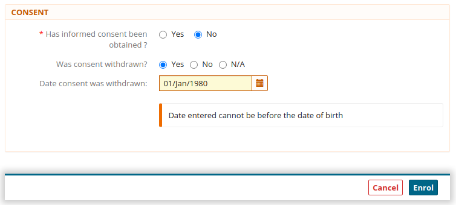
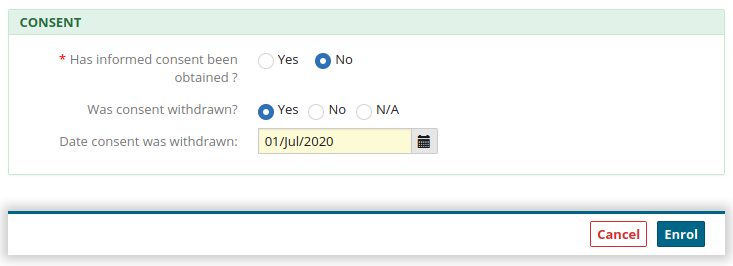

Some of these examples aren't likely in practice but thats not to say we shouldn't address them.
The system is returning a good Error message (in content not presentation), but isn't showing the Field to be Invalid and the Enrol button is Active
But also a Required fields Error status is being removed by a format that we are saying is Invalid
Likewise for 2000-01-01 and 01-13-2000
We should refuse some formats, we can't cover every input possibility, but we should give feeback
Again, we can't cover every input possibility but we should give feeback.
This is inappropriate as we must assume it was changed for a reason, so to change it back without saying we are doing so is likely to end in a value the User doesn't want being saved.
Should we not a have a baseline for exceptable DOBs which is consistantly reflected in both the text input and date picker?
This is how it should be, its preventing a bad choice rather than deleting it and seems intuitive
But here allows a DOB 160 years in the past
'Date entered cannot be before the date of birth' - content is correct and it is apperaing as an Error message, but this should be a Hard check = Red and Enrol button should be disabled
This states that there is no Consent to Enrol the Patient to the system, but we are allowing them to Enrol. Should we harden this up, its not just a data point.
